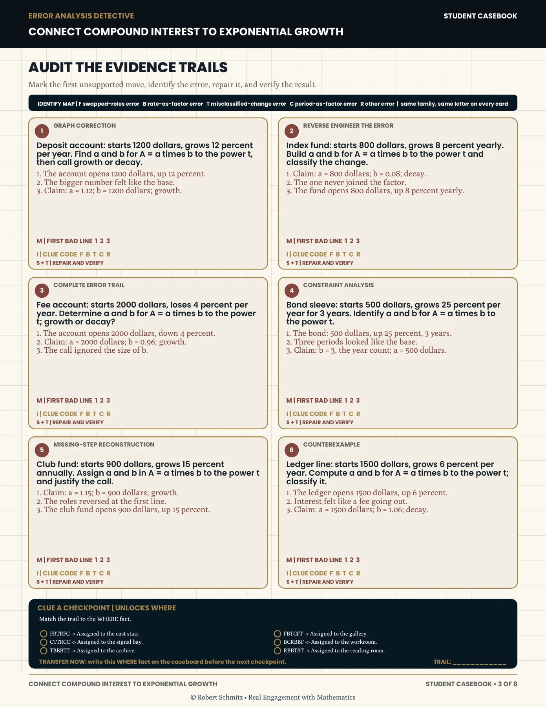
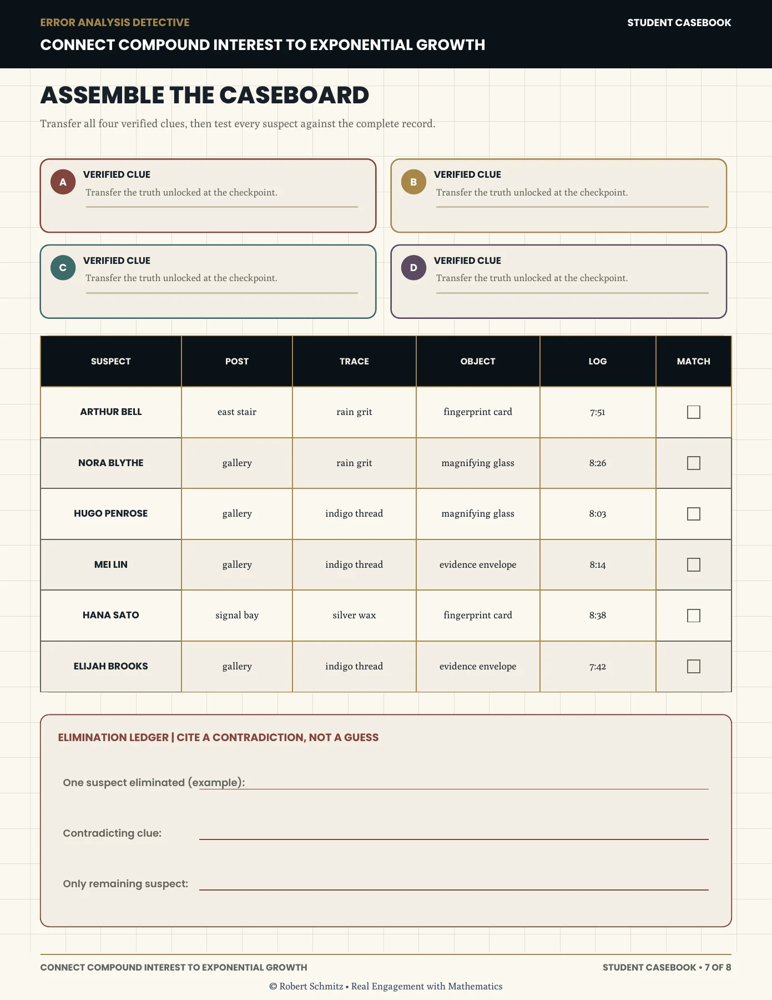
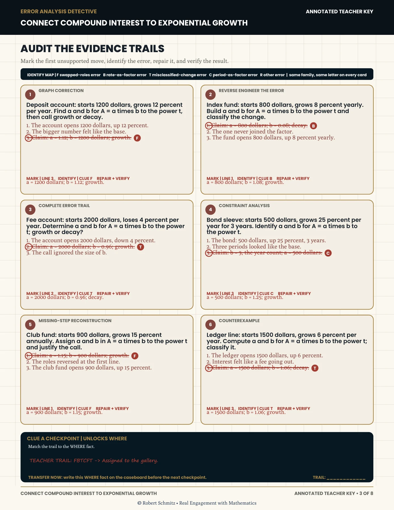
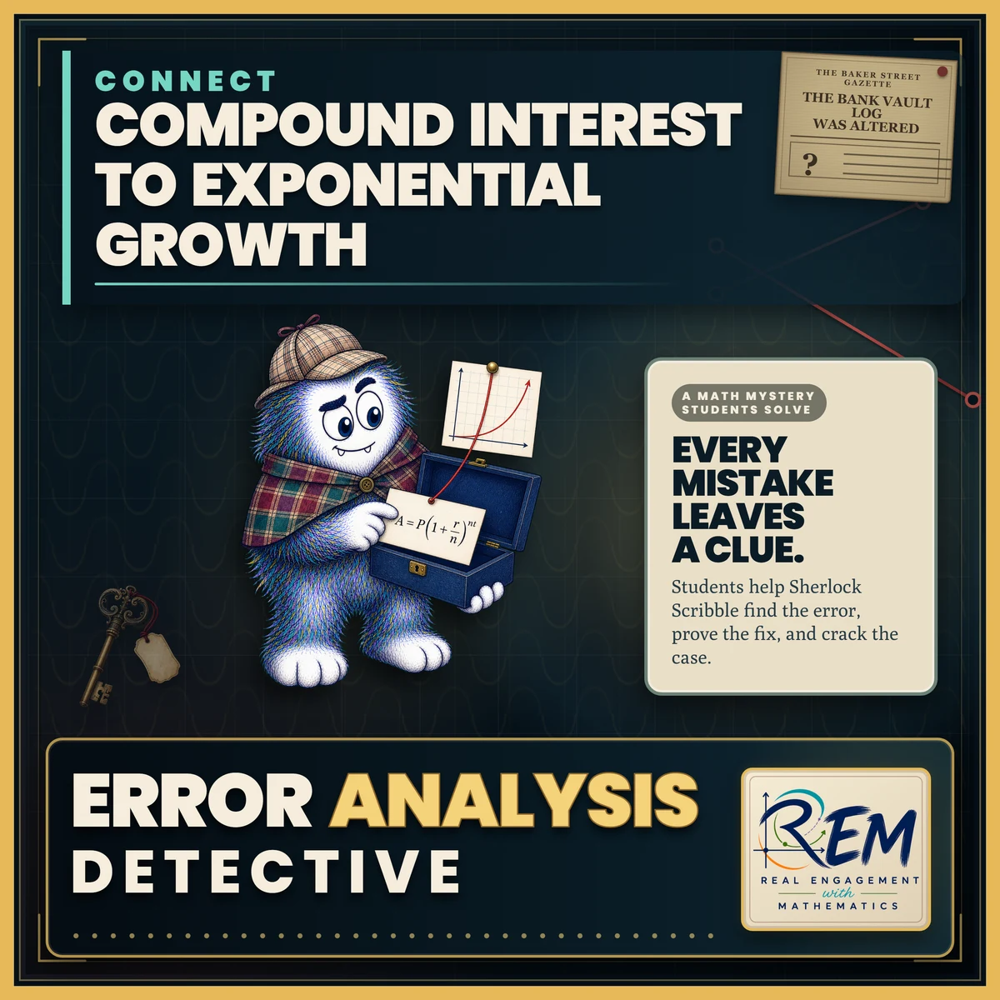

{kind=link}
{kind=link}
{kind=link}
Put the reasoning before the reveal
The investigation asks for a correction and a check. Naming a suspect is the payoff for the mathematical work, so the caseboard keeps evidence attached to each conclusion.
Error analysis · Mathematical reasoning
A mystery gives learners a reason to inspect the mathematics, challenge a claim, and defend a correction.
Error Analysis Detective Compound interest & exponential growth
See the actual materials ↓ A little character.
A little character.Watch the resource preview
The original preview video presents this lesson’s materials and activity structure.
The learner experience
An incorrect growth projection becomes a case to investigate. Learners trace worked solutions, locate the first unsupported move, and repair the reasoning before using their findings to eliminate suspects.
Locate the first unsupported step in the worked mathematics.
Correct the model and test whether it fits the stated growth situation.
Combine verified clues and explain which suspect the evidence supports.
Inside the resource
Selected pages from the actual resource files. Open any page to inspect the details.

Student casebook, page 3. Six worked trails ask learners to locate, identify, repair, and verify an error.

Student casebook, page 7. Verified clues feed a suspect grid and a written elimination argument.

Annotated teacher key, page 3. Corrections sit beside the original trails for comparison.
Why I designed it this way
The investigation asks for a correction and a check. Naming a suspect is the payoff for the mathematical work, so the caseboard keeps evidence attached to each conclusion.
Worked error trails bring growth-factor and model errors into view. The annotated teacher key shows where a line of reasoning breaks and how to repair it.

Open the original cover ↗Cover, character & visual identity
This original cover introduces Error Analysis Detective. The character, palette, and visual theme give the resource an identity; the student pages and teacher support show how the activity works.
Explore the classroom design collection →Evidence & next evaluation
These authored materials show the activity structure and design decisions. Learner outcomes have not yet been measured for this case study.
Observe whether learners can locate and explain the first error on a new growth problem without the mystery clues.
{kind=link}